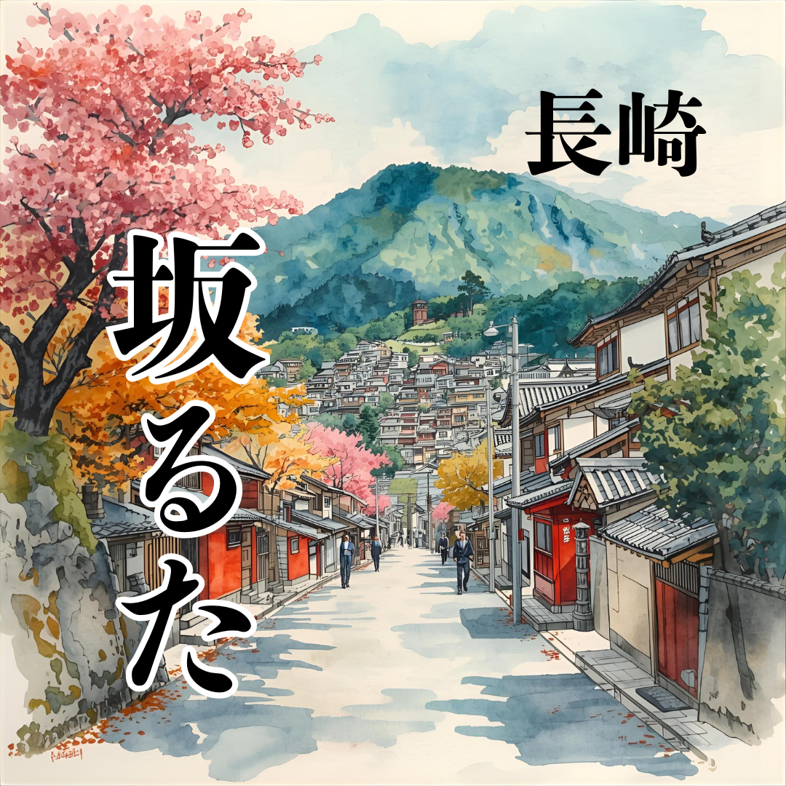

かるた44音、44の坂、44の物語。
遊びが、街のガイドブックになる。
長崎市内の特徴的な44の坂を選定しました。
かるたセットにはそれぞれの坂の逸話などを紹介する「坂の物語」冊子も添付予定。
子供から大人まで、遊びながら自然と長崎の歴史と地理に詳しくなれる体験を提供することが出来ます。
遊びながら学ぶ
長崎坂るたは、かるた遊びを通じて坂の名前や歴史を楽しく学べる仕組みを提供します。
地域資産の再発見
坂の名前や歴史を覚えることで、地域の文化資産を改めて認識し直すことができます。
WEBとオープンデータ活用
WEBサイトとオープンデータを組み合わせて、情報活用や観光促進を促進します。